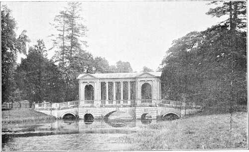

Dawn Of Landscape Gardening. Part 3
Description
This section is from the book "A History Of Gardening In England", by Alicia Amherst. Also available from Amazon: A History Of Gardening In England.
Dawn Of Landscape Gardening. Part 3
Switzer was a pupil of London and Wise, and avowed himself an admirer of Pope's ideas on gardens. He gives his views fully in The Nobleman's, Gentleman's and Gardener's Recreation, in 1715, published again with additions as Ichnographia Rustica, in 1718, " by which title is meant the general Designing and Distributing of County Seats into gardens woods Parks Paddocks etc.: which I therefore call forest, or in more easie stile Rural gardening." Here is a beginning of the end of Formal Gardening. This " Le grand Manier," he goes on to say, is " oppos'd to those crimping, diminutive and wretched Performances we every where meet with. . . . The top of these designs being in dipt plants, Flowers, and other trifling Decorations ... fit only for little Town gardens, and not for the expansive Tracts of the Country." In another place,"* he goes still further, and says his work is for the " Embellishment of the whole Estate." The grounds to be " handsomely divided by Avenues and Hedges . . . little walks and purling streams . . and why is not a level easy walk of gravel or sand shaded over with Trees and running thro' a corn field or Pasture ground as pleasing as the largest walk in the most magnificent garden one can think of? and why are not little gardens and Basons of water as useful and surprising (and indeed why not more so) at some considerable Distance from the Mansion House as they are near it." The gardens I have quoted above, and his own plans, however, do not go as far as admitting cornfields, but the garden had ceased to be an enclosure, and was already encroaching on the park and surrounding country. The movement in its beginning was doubtless a good one, this casting off some of the unnatural formality and stiffness that gardens of the Dutch type had reached. The French gardens that were copied gave a larger space to work upon, and involved much more expense, thus the natural surroundings were made use of, to help out a large design, and so if possible to cut down the expense.
I do not think that the pioneers of the landscape style can be blamed for the abuse of it a few years later ; when the real flower-garden, " the terrestrial Paradise" of flowers was gradually banished, and instead of a garden encroaching on a park, the park came up to the house, and the flower-garden nearly disappeared. People were tiring of "Topiary" work, which had so long been popular. Instead of cut hedges, alleys, arbours, and a few standard trees, gardens were overcrowded with a confusion of cut bushes, and it is not surprising that any one with a love of the beauties of Nature, as she appears in woods and fields, should long to see, at any rate, an occasional tree left to grow in its own wild and graceful way. " Our British gardeners," wrote Addison,*" instead of humouring Nature, love to deviate from it as much as possible. Our Trees rise in Cones, Globes, and Pyramids. We see the marks of the scissars upon every Plant and Bush. I do not know whether I am singular in my Opinion, but, for my own part, I would rather look upon a tree in all its Luxuriancy and Diffusion of Boughs and Branches, than when it is thus cut and trimmed into a Mathematical Figure; and cannot but fancy that an Orchard in Flower looks infinitely more delightful than all the little Labyrinths of the most finished Parterre".
The next year (1713) Pope followed up this appeal for natural gardens in the Guardian, with some more cutting remarks on the fashion of " verdant sculpture." He supposes that " an eminent town gardiner "... who has " arrived to such perfection, that he cuts family pieces of men, women, or children in trees," has sent him his catalogue of greens for sale. A most witty list of trees follows; among them are " Adam and Eve in yew, Adam a little shattered by the fall of the tree of knowledge in the great storm; Eve and the Serpent, very flourishing. St. George in box, his arm scarce long enough, but will be in condition to stick the dragon by next April; A green dragon of the same, with a tail of ground-ivy for the present. (N.B.—These two not to be sold separately.) Divers eminent modern poets in bays, somewhat blighted, to be disposed of a pennyworth. A quickset hog, shot up into a porcupine, by its being forgot a week in rainy weather." In the beginning of the Essay from which the above is taken, Pope quotes Homer's description of the garden of Alcinous, in the Odyssey, and gives his own translation of the passage :—
* Spectator, 414, June 25th, 1712.
" Close to the gates a spacious garden lies, From storms defended and inclement skies ; Four acres was the allotted space of ground, Fenc'd with a green inclosure all around. Tall thriving trees confess the fruitful mold, The red'ning apple ripens here to gold.
* * * *
Beds of all various herbs, for ever green, In beauteous order terminate the scene".
If such was Pope's ideal garden, it had little in common with the landscape style he helped so much to bring in. " How contrary to this simplicity is the modern practice of gardening! " he continues. " We seem to make it our study to recede from Nature, not only in the various tonsure of greens into the most regular and formal shapes, but even in monstrous attempts beyond the reach of the art itself. We run into sculpture, and are yet better pleased to have our trees in the most awkward figures of men and animals, than in the most regular of their own." No one, even the most ardent advocate of the formal garden, can deny that Pope and Addison had much right on their side. But there was no reason to rush to the other extreme, and have no arrangement, or no straight lines of any sort, in a garden. Two years later Pope settled at Twickenham, and his Villa there, far from being in the simple style he admired, became a complicated piece of mimicry of rural scenery of all sorts. He took infinite pains in planning and planting. " I thank God," he wrote in a letter to a friend, "for every wet day and for every fog, that gives me a headache, but prospers my work." His famous grotto, " composed of marbles, spars, gems, ores, and minerals," was the amusement of his declining years. It would hardly lay claim to being " natural," for nothing more fantastical can be imagined, although in Pope's own lines to his grotto, he invites the stranger thus:—"Approach! Great Nature studiously behold".
PALLADIAN BRIDGE AT STOW.
Continue to: